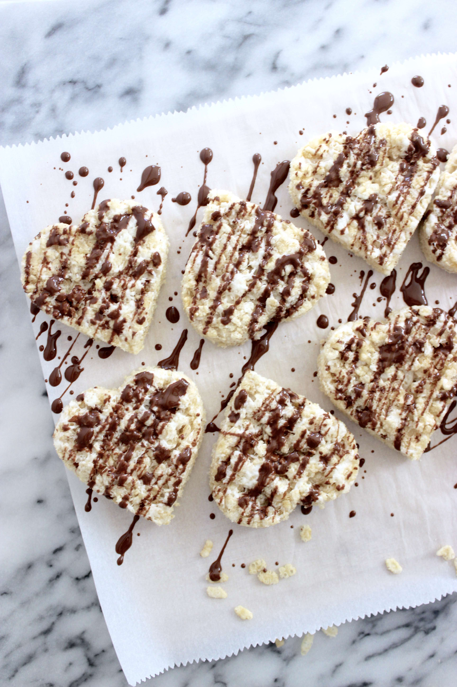
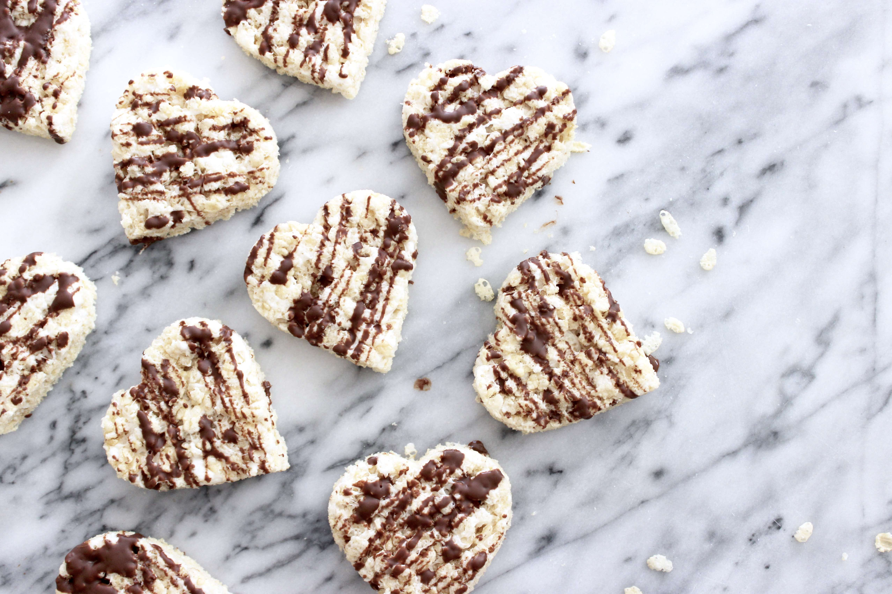
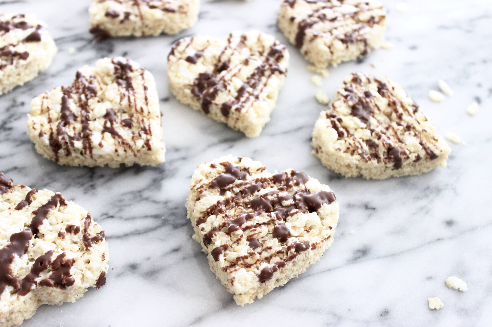

[^url]
Rice krispie treats

In my book, the real reason Valentine’s Day is even a holiday is because we all needed a good excuse to break our New Year’s resolution diets. What better way of doing so than in the name of love? Am I right!? Speaking of New Year’s resolutions – it is mine to create more blog content and post more often than twice a year! (Check out the post right before this one, dated from almost a year ago.)
If you haven’t already gathered, I have a sweet tooth. In fact, one of the most exciting things to me upon embarking this vegan journey (not sure what else to call it) was discovering new ways to create sweet treats that were just as delicious as their non-vegan counterparts. I’ve always really enjoyed coming across recipes of people making ‘knock-offs’ (I mean that as a compliment!) of store bought treats in their own kitchen (think Little Debbie snacks, Nutter Butters, etc.). I love thinking up of ways of veganizing dishes I enjoyed from my pre-vegetarian days. Well, these treats are just that kind of fun – they’re the veganized knock-off of the Kellogg’s Rice Krispie treat!
 
Ingredients
- 1 10 oz bag of vegan marshmallows (I used Dandies Marshmallows, can be found at Whole Foods. Sub regular marshmallows if not vegan.)
- 5 c crisp rice cereal
- 2 tbs vegan butter (such Earth Balance or Smart Balance)
- 2 tbs coconut oil + ½ tbs for melting chocolate chips
- 1 c vegan semisweet chocolate chips (optional, for coating)
Instructions
- In a microwave safe bowl, combine marshmallows, butter, and coconut oil. Microwave in 30-second intervals, stir between each microwave. Repeat until marshmallows are fully melted. (You can also do this over the stove using a saucer pan. In a saucer pan over medium heat, combine marshmallows, butter, and coconuts oil. Stir until marshmallows are completely melted.) M- ix in cereal and combine mixture until all the cereal is evenly coated with the marshmallow mixture.
- Press mixture into a 9″ X 9″ pan. Once cool, cut into squares or into desired shapes using a cookie cutter.
- In a sauce pan over low heat, combine chocolate chips with ½ tbs of coconut and stir continuously until melted.
Drizzle chocolate (or topping of choice) over treats.
– Corinna